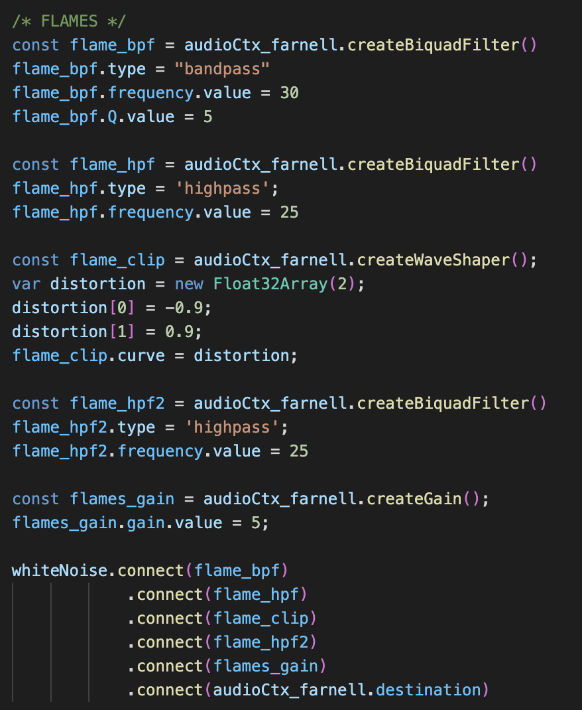
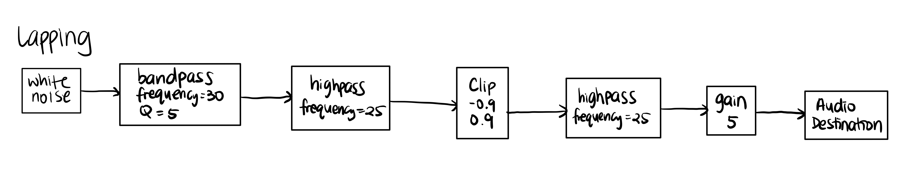
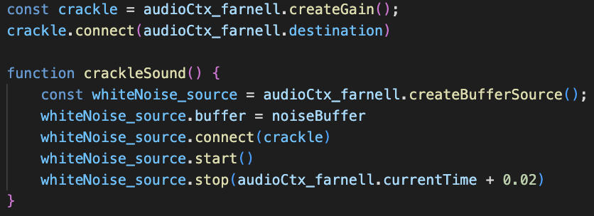
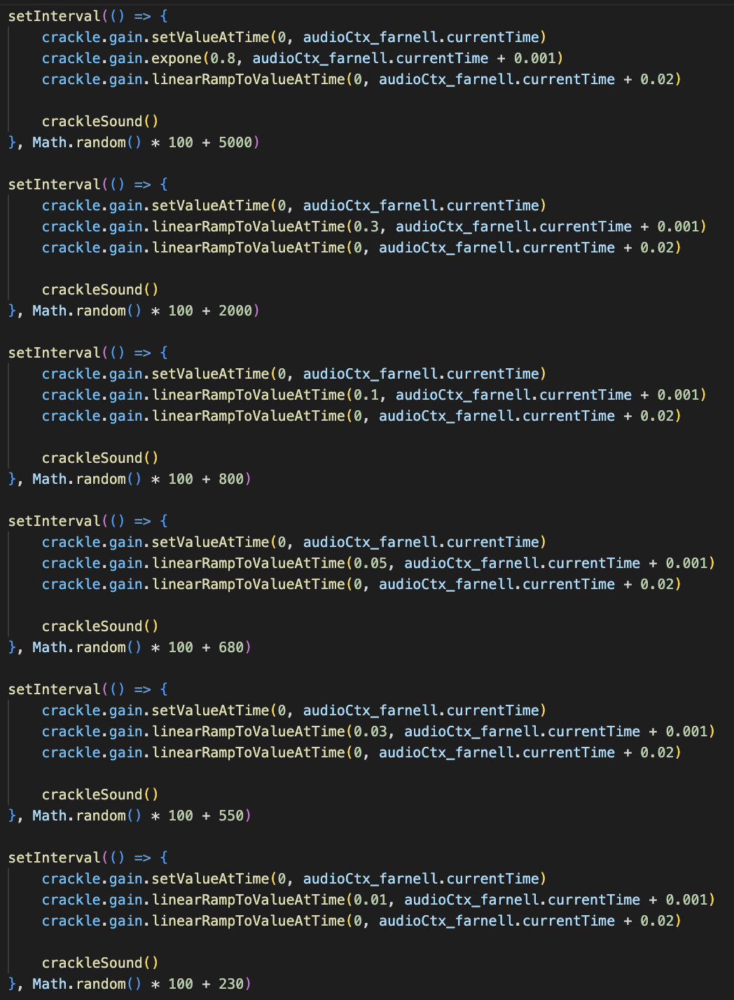
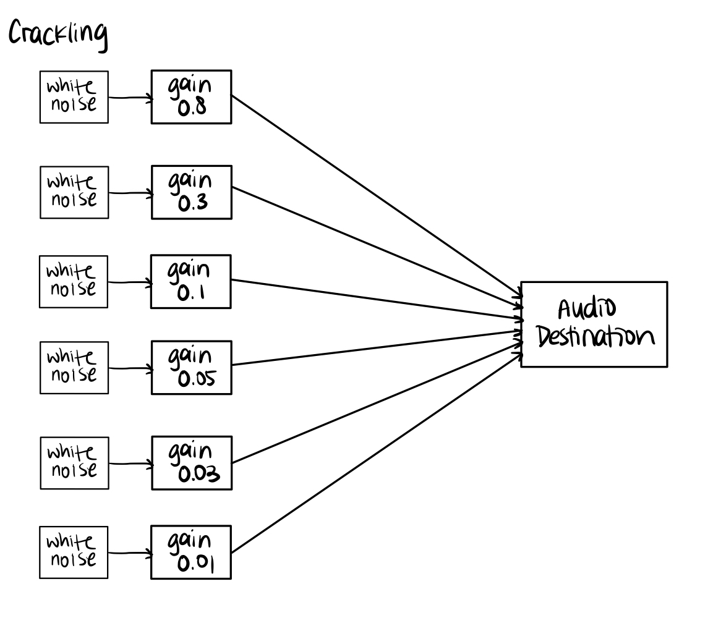
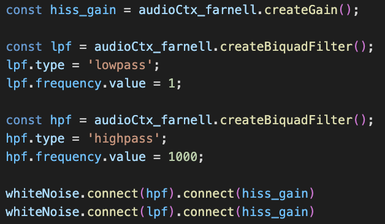
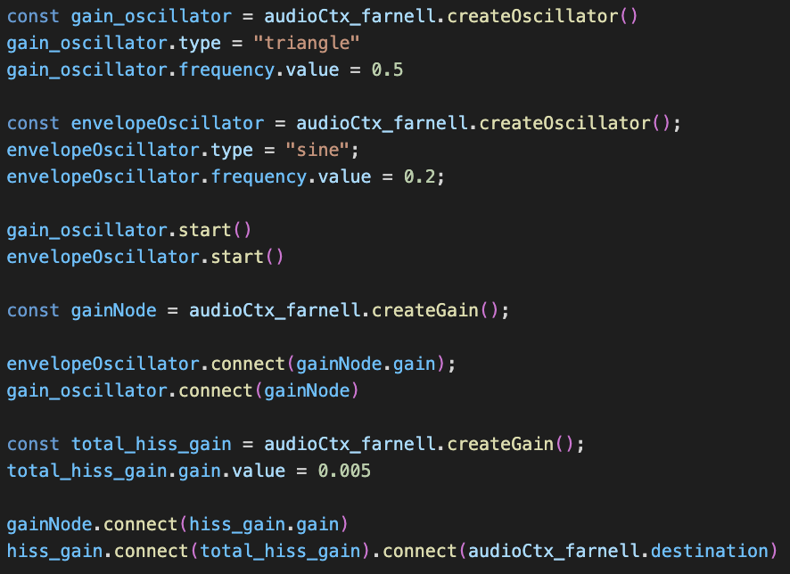
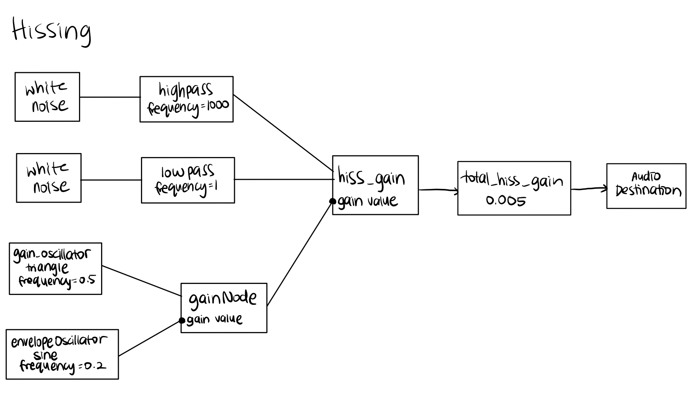

Note: Worked with Pru
For part 2 of this assignment, I have decided to take on the challenge and recreate the sound of fire. According to Farnell's description that I used as reference, the sound of fire is made up of three components:
1. Lapping: the sound of combustion of gases in the air, the distinct sound of flames itself
2. Crackling: small scale explosions caused by stresses in the fuel (e.g., crackling of wood)
3. Hissing: regular outgassing sounds caused from release of trapped vapor
Therefore, to recreate the sound of fire, I will create these 3 sound components separately and blend them together in the end.
Below is the code used to create the lapping sound of fire. As you can see, I used multiple filters on white noise to achieve this sound:
A bandpass filter is used to create the resonant sound of pressure created by the burning gas. However, this sound is not sufficient as there are too much low frequency in the sound. To remove them, I then implement a highpass filter but still there's a problem with the dynamics of the sound going over and underlevel. To address this, I added a clip that caps the level of the sound to a low of -0.9 and a high of 0.9. The last highpass filter is added to fix the sound for the rare cases where modulation is too high and causes the clip to lock at a constant signal. I added a final gain node to control the total gain of the lapping noise to blend with the crackling and hissing noise later when integrated.
Below is the audio signal graph for lapping:
For this section, I deviated from Farnell's method of recreating the Farnell sound as I found it too confusing to implement. However, I took the fundamental elements of what a crackle should be according to Farnell to recreate my own crackling sound. The crackling is made of individual crackle sounds taken from white noise that quickly starts and stops to create a snapping sound. The code to make these individual crackle sound is shown below.
Now that I have an individual crackle tone, I need to create multiple instances of the crackle to create more density. I made a total of 6 separate crackling sounds that are timed to repeat at random times. Each crackle also jumps to different gains to give the crackling noise more color and to sound more realistic. Each crackle is fitted to a tight envelope to create a snapping crack sound.
Below is the audio signal graph for crackling:
To create the hissing noise, I took a base white noise and have one go through a low pass filter to modulate the hissing with a random low-frequency signal and the filter selects the frequencies we want. However, there are too many low frequencies in the hissing sound and so I made another white noise go through a high pass filter to fix this.
Now we have a constant hissing noise, but this is not exactly what we want. In a fire sound, the hissing is more sporadic as the sound comes and goes. I tried implementing Farnell's descriptions but it didn't quite give me the sound that I want as the hissing sounded too violent that it sounded off. To achieve the effect I want, I knew I had to play with the gain node and to create the effect of the sound coming in and out, I decided to use an oscillator to control the gain. However, I tried using the 4 different oscillator types on web audio (sine, sawtooth, square, triangle) and the dynamics of the hiss was too regular and not sporadic enough to sound realistic. I ended up layering two waves together by having a triangle wave connect to a gain node, that's gain value is controlled by a sine wave. This layered wave I then use to control the gain of the two white noise, one with highpass filter and the other with a lowpass filter. The resulting effect is a sound that sporadically increases and decreases in volume but one that is not too violent. Below is the code that I used to control the gain value.
To tie everything together, I connect all components into a total_hiss_gain node that will control the overall gain of the hissing sound so it blends nicely with the lapping and crackling noises.
Below is the audio signal graph for hissing:
